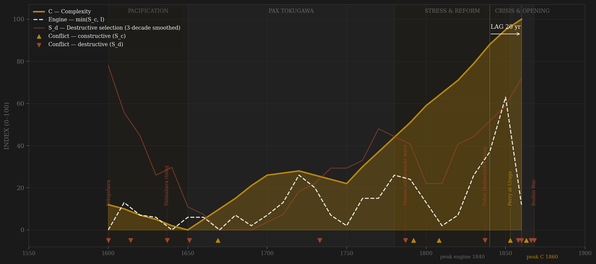
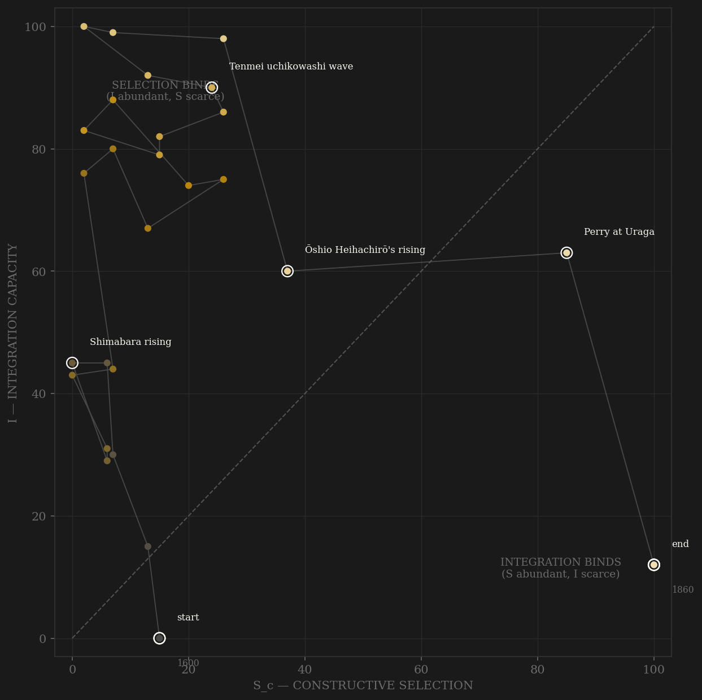

Tokugawa is what the framework predicts when a state deliberately sets S to zero and pours everything into I. After Sekigahara and the Osaka campaigns extinguish every rival, the bakufu closes the samurai ranks by heredity and the country by edict: channel A near-floor, channel B legislated to zero for two centuries. Meanwhile integration — measured here, not scored: cross-market rice-price dispersion across Iwahashi's fourteen markets — falls from a CV of 0.27 in the 1650s to 0.16 by the 1810s, the Osaka-centered grid at its premodern best. Complexity compounds on that lattice alone: GDP per head, urbanization, Edo at a million people. But the engine line stays starved — the polity spends two hundred years in the selection-binds region, its Liebig minimum pinned at the S term the regime had legislated away. The famine crises (Kyōhō, Tenmei, Tenpō) each spike S_d and entropy without opening the contest; the reform decades (1720s Kyōhō valves, 1840s Tenpō fights) lift within-rules competition briefly. Then 1853: Perry floods channel B after two centuries at zero, bakumatsu talent recruitment cracks the status system from below, and the engine finally surges — exactly as the treaty-port price revolution and the 1866 yonaoshi wave tear the integration grid apart (CV blows out to 0.29, Osaka rice at four times the long-run norm). Engine peaks 1840s, C peaks on the terminal row, lag +20 — a formal PASS under both definitions, but right-censored: the complexity that answered the bakumatsu selection surge was built by the successor state, not this one.

The trajectory is the sample's cleanest one-axis climb: it enters at the founding low on integration, then marches almost straight up the I axis for two centuries — deep into the selection-binds quadrant and pinned there, like Song China but by statute rather than temperament: Tokugawa never lacked coordination; it had outlawed the pressure. Nothing else in the sample sits so far off the diagonal for so long. The famine decades (1780s, 1830s) barely deflect the path — S_d spikes are absorbed without moving contestability. Then the bakumatsu ending is violent in phase space: Perry yanks the point hard rightward along the selection axis while integration collapses downward — the trajectory dies crossing the diagonal it had avoided for the polity's whole life, landing in the integration-binds corner. Where Rome ends pinned against the S=0 wall with integration merely halved, Tokugawa ends the opposite way: selection at its maximum for the first time in the polity's life, integration in ruins beneath it.
Coded by locus and target, never by outcome. The founding violence — Sekigahara, the Osaka campaigns — is S_d: contests for national supremacy aimed at the coordination order itself. Shimabara is S_d by the same rule. The ikki arc runs through the ledger as the Aoki chronology's decade counts: sparse in the seventeenth century, rising secularly through the eighteenth, the Tenmei and Tenpō smashings, Ōshio Heihachirō — a former official burning a quarter of the shogunate's commercial capital — and the terminal 1866 yonaoshi maximum. Perry is the instructive case in the other direction: maximal external pressure, core machinery untouched — S_c by locus, the channel-B flood that finally gave the system something to select against. The Ansei purge is the Yuanyou precedent again: proscription without battle, aimed squarely at the machinery of counsel — S_d without a battlefield.
| YEAR | CONFLICT | CODE | CODING RATIONALE |
|---|---|---|---|
| 1600 | Sekigahara | Sd | Founding S_d: the era's largest internal battle, a contest for national supremacy; ~90 houses attainted in the settlement |
| 1614 | Osaka campaigns | Sd | Winter/summer campaigns 1614–15 extinguish the Toyotomi rival court — violence aimed at the coordination order |
| 1637 | Shimabara rising | Sd | Peasant-Christian rising in Kyushu, ~37,000 dead at Hara castle — the largest internal violence between Osaka and the bakumatsu |
| 1651 | Keian plot | Sd | Yui Shōsetsu's rōnin conspiracy against the bakufu, suppressed pre-rising; answered by the adoption-law valve |
| 1669 | Shakushain's revolt | Sc | Ainu war on the Ezo frontier — external locus, core untouched (frontier rule) |
| 1733 | Kyōhō famine riots | Sd | Edo's first uchikowashi; the famine wave turns grain politics violent (Aoki arc rising) |
| 1787 | Tenmei uchikowashi wave | Sd | Edo and Osaka smashings cap the 1783–87 cluster — the 18th century's ikki maximum in the Aoki chronology |
| 1792 | Laxman at Nemuro | Sc | First formal Russian embassy — the northern question opens; coastal-defense surveys follow |
| 1808 | Phaeton at Nagasaki | Sc | British frigate forces the harbor; the magistrate's suicide — external pressure, machinery intact |
| 1837 | Ōshio Heihachirō's rising | Sd | A former Osaka police official rises in arms and burns a quarter of the shogunate's commercial capital — machinery attacked from inside, mid-Tenpō famine |
| 1853 | Perry at Uraga | Sc | Maximal external pressure, core untouched — S_c by locus; channel B floods after two centuries at zero |
| 1858 | Ansei purge | Sd | Ii Naosuke punishes ~100, executes Yoshida Shōin — proscription aimed at the machinery of counsel (Yuanyou precedent) |
| 1860 | Sakuradamon incident | Sd | The regent assassinated at the castle gate — shishi terror opens the terminal spiral |
| 1863 | Anglo-Satsuma & Shimonoseki | Sc | Kagoshima bombarded 1863, four-nation squadron 1863–64 — peer rivalry at maximum; drives the arms race and the kiheitai (separate engagements, one arc tick) |
| 1866 | Second Chōshū expedition & yonaoshi wave | Sd | The bakufu army beaten by a single domain while the 1866 riot wave sets the Aoki chronology's absolute maximum |
| 1868 | Boshin War | Sd | Terminal: Toba-Fushimi to Ueno and Aizu — the contest for the state itself; the bakufu dissolves |
| COMPONENT | GRADE | BASIS |
|---|---|---|
| S_c — A. Elite-entry (0.40) | ○ scholar-coded | The closed-ranks control case — no exam corpus exists because the system was the finding. Coded arc: post-Sekigahara reshuffle → hereditary closure (Iemitsu) → Kyōhō valves (tashidaka 1723, meyasubako 1721, Kaitokudō 1724) → Tanuma mobility → gakumonginmi 1792 → Tenpō domain talent (Zusho/Murata) → bakumatsu men-of-talent (Nagasaki naval academy 1855, kiheitai 1863, low-rank samurai running national politics). RISES late as the status system erodes toward Meiji. Totman 1993; Najita 1987; Hall 1955; Jansen 2000; Huber 1981 — per-decade cites in coding_ledger_v2.csv |
| S_c — B. External rivalry (0.30 hard cap) | ○ scholar-coded | Near-zero BY DESIGN 1640s–1840s (sakoku) — the coded zero reflects legislated isolation, not peace of exhaustion. Ryukyu 1609; Russian probes 1792–1813; Opium War shock 1842; Perry 1853–54; Harris 1858; Anglo-Satsuma/Shimonoseki 1863–64; terminal arms races. Sc_v1_combat = this channel alone |
| S_c — C. Within-rules contest (0.30) | ○ scholar-coded | Rōju council politics; sobayōnin-vs-fudai under Tsunayoshi; Hakuseki's Shōtoku program; Kyōhō reform peak; Tanuma-vs-traditionalist contest; Kansei; Mizuno's Tenpō agechi-rei defeated through channels 1843; Abe's daimyo consultation 1853 and the Hitotsubashi/Kii contest — within rules until the 1858 purge flips it to S_d. Hall CHJ vol.4; Ooms 1975; Totman 1980 |
| S_d — Destructive | ◐ coded from published aggregates | Aoki Kōji ikki/uchikowashi chronology as reproduced in White 1995 (ch.2), Vlastos 1986, Borton 1938: sparse 1600s → secular 18th-c rise → Tenmei 1780s cluster → Tenpō + Ōshio 1837 → 1866 yonaoshi maximum. Founding S_d: Sekigahara + Osaka campaigns. Nichibunken incident-level database 404s (2026-07-06) — decade ordinals, not event counts; upgrade path noted in SOURCES.md |
| I — Integration | ● measured 1650s–1860s · ○ coded before | 0.6 × inverse cross-market rice-price CV — Iwahashi 14-market grid (GPIH UC Davis, Iwahashi 1981 App. Table 1), ≥4 markets/yr, ≥5 yrs/decade: CV 0.27 (1650s) → 0.159 floor (1810s) → 0.29 blowout (1860s) — + 0.4 × coded institutional (sankin kōtai 1635, Kawamura circuits 1671–72, Dōjima charter 1730, kabunakama abolition disruption 1841–51). Weights renormalize pre-1650 |
| C — Complexity | ◐ proxy benchmarks | Equal-weight mean: Maddison-2023/Bassino GDPpc benchmarks (1600/1700/1721/1750/1800/1846/1870 — interpolated within span, never extrapolated), Clio-Infra urbanization ratio, Chandler/Modelski Edo population (100k→1M). ≥2 components required; trend-only between anchors |
| E — Entropy | ◐ mixed | 0.5 coded famine/debasement ordinal (Kyōhō 1732–33, Tenmei 1782–88 + Asama 1783, Tenpō 1833–37 — Jannetta 1992; Genroku recoinage 1695, Bunsei/Ansei debasements — Iwahashi 2004) + 0.3 measured Osaka rice shock |Δln P| (1700+) + 0.2 inverse Clio real wage (1820+) |
| R — Renewal | ◐ census anchors | Clio-Infra population, millions raw: 18.5M 1600 → 27M 1700 → 32M 1850 — the famous census plateau. 1600 basis contested (Hayami ~12M); flagged, not adjusted |
27 decade rows 1600–1860 built by scripts/build_tokugawa_sicre.py (straight-to-v2 per AMENDMENT_S_definition_v2.md; channel ledger data/raw/tokugawa/coding_ledger_v2.csv, audit trail components_audit.csv, provenance + explicit gaps data/raw/tokugawa/SOURCES.md). Frozen-protocol lag under BOTH definitions: v1 (channel B alone) engine 1840 → C 1860 = +20 PASS; v2 contestability engine 1840 → C 1860 = +20 PASS — definitions agree because the bakumatsu opening floods every channel at once. Two honest caveats. (1) RIGHT-CENSORED: peak C sits on the terminal row — GDPpc, urbanization and Edo were all still rising when the polity dissolved in 1868; the complexity that answered the bakumatsu selection surge was largely realized by Meiji. The +20 PASS is the within-polity reading. (2) Edge sensitivity (Athens precedent): unsmoothed peaks are engine 1850 → C 1860 = +10 SIMULTANEOUS; the PASS depends on the frozen 3-decade smoothing at the series edge. C is benchmark-interpolated between ~7 Maddison anchor years — trend-only between anchors. I is the strong suit: measured market-price dispersion 1650s–1860s (● where covered). Rebuild: build_tokugawa_sicre.py, then polity_report.py --slug tokugawa